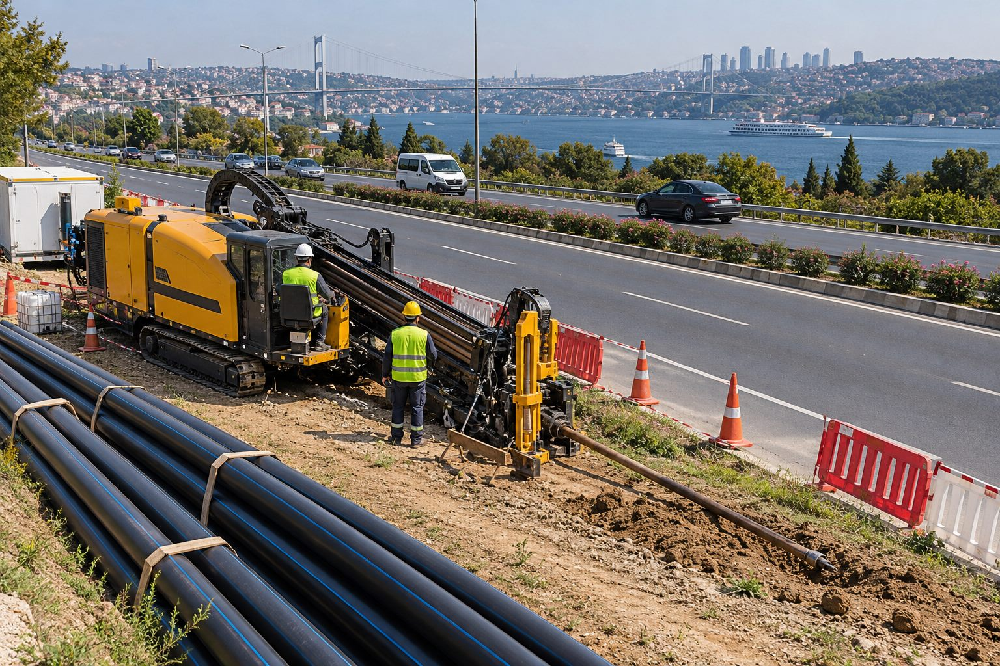

Trafik akmaya devam eder
Yol kapatma, şerit daraltma ve asfalt onarımı gerekmez.
Hizmetlerimiz · 08

Yol Altı Geçiş Uygulamaları
Karayolu ve şehir içi yol altı geçişlerinde trafiği kesmeden, asfaltı bozmadan altyapı geçişi.
Yol altı geçişleri, yatay sondajın en sık uygulandığı alandır. Cadde, bulvar ve karayolu kesitlerinde açık kazı; trafik kesintisi, asfalt onarımı ve güvenlik riski demektir. Yatay sondaj ile hat yolun altından, yüzeye dokunmadan geçirilir.
Karayolları Genel Müdürlüğü ve belediyelerin geçiş şartları (derinlik, kılıf, geri dolgu) projeye işlenir; uygulama gece veya gündüz, trafik akışını etkilemeden yapılır.
Neden Yiba?
Yol kapatma, şerit daraltma ve asfalt onarımı gerekmez.
Gerekli kesitlerde çelik kılıf ile hat korunur.
KGM ve belediye şartnamelerine uygun derinlik ve detay.
Çoğu şehir içi geçiş günler içinde tamamlanır.
Sık sorulan sorular
Evet; karayolu veya belediye yolu olmasına göre ilgili idareden geçiş izni alınır. Teknik dosya hazırlığında destek veriyoruz.
Giriş ve çıkış çukurları yol dışında konumlandırılır; trafik akışı etkilenmez.
İdarenin şartnamesine ve yol kesitine göre belirlenir; genellikle yol tabanının yeterince altında planlanır.